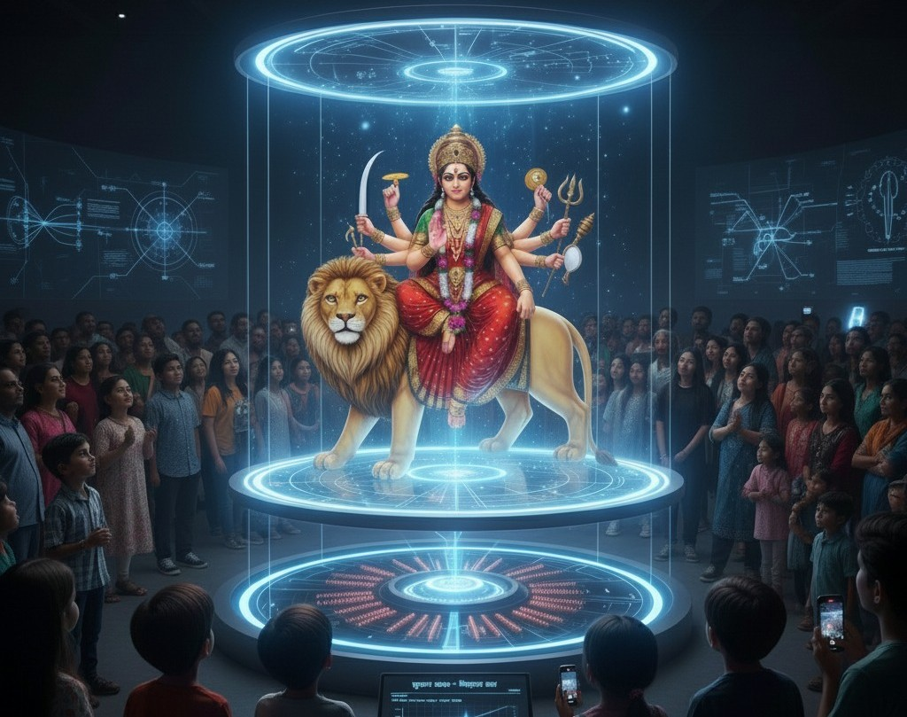

দুর্গা on Magnetic Field
আধুনিক বিজ্ঞানের ছোঁয়ায় দুর্গাপূজার এক অভিনব ভাবনা হলো চৌম্বকক্ষেত্রে ভাসমান দুর্গা। ধারণাটি সহজ: দুটি ইলেক্ট্রোম্যাগনেটিক কয়েল এমনভাবে বসানো যে মুখোমুখি নিকটবর্তী পৃষ্ঠে একই মেরু (উত্তর–উত্তর বা দক্ষিণ–দক্ষিণ) তৈরি হয়। একই মেরু হলে বিকর্ষণ বল জন্মায়, এবং সেই বলের মান নিয়ন্ত্রণ করা যায় কয়েলে প্রবাহিত কারেন্ট পরিবর্তন করে। কারেন্ট যত বাড়ে, চৌম্বকক্ষেত্র তত শক্তিশালী হয়, ফলে বিকর্ষণ বলও বাড়ে।
দুর্গার মূর্তিটি একটি হালকা, অ-চৌম্বকীয় প্ল্যাটফর্মে বসানো থাকবে; প্ল্যাটফর্মের নিচে ও বেসের ভিতরে থাকবে কয়েল। লক্ষ্য হলো উপরের কয়েল থেকে আসা বিকর্ষণ বল ঠিক এতটাই রাখা, যাতে তা নিচের দিকে টান, অর্থাৎ মূর্তির ওজনের সমান হয়। তখন প্ল্যাটফর্ম ভারসাম্যে ভাসবে—না ওপরে উঠবে, না নিচে নামবে। গাণিতিকভাবে,
Repulsive Force = Weight of Durga অর্থাৎ, ।
বাস্তবে স্থিতিশীলতা বাড়াতে সেন্সর ও ফিডব্যাক সার্কিট ব্যবহার করা যায়, যা উচ্চতা সামান্য বদলালেই কারেন্ট সমন্বয় করে। প্রান্তে স্বচ্ছ গাইড-রড বা চৌম্বকীয় শিল্ডিং দিলে পাশের দিকে সরে যাওয়া কমে। নিরাপত্তার জন্য অতিরিক্ত স্টপার, তাপ নিয়ন্ত্রণ ও নিরবচ্ছিন্ন বিদ্যুৎ ব্যবস্থা জরুরি। ঐতিহ্য ও প্রযুক্তির এই মিলন শুধু নান্দনিক নয়, শিক্ষামূলকও—চৌম্বকত্ব, তড়িৎচুম্বক ও ভারসাম্যের মৌলিক ধারণা দর্শকদের চোখের সামনে প্রাণবন্ত হয়ে ওঠে।এই প্রক্রিয়ার মাধ্যমে যেমন দর্শনার্থীদের পদপিষ্ট হয়ে মারা যাওয়ার সম্ভাবনা কমে যায়, তেমনই শিশু থেকে বৃদ্ধ—সকল বয়সের দর্শনার্থীর দুর্গা প্রতিমা দেখার সুযোগ হয়।